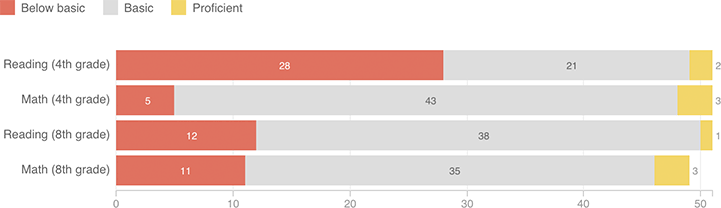

The Nation’s Report Card: How The States Compare
New analysis from the National Assessment of Educational Progress shows differences in how states define “proficiency.” For example, fourth-grade “proficient” reading standards in 28 states would be considered “below basic” under NAEP’s benchmarks.
